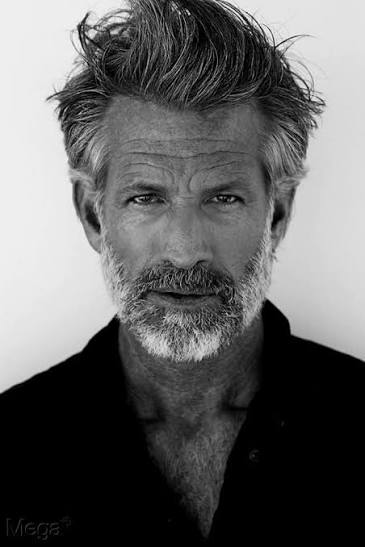

| Nationality | American |
| Known for | International fashion and commercial model represented by Wilhelmina Models and METRO Models Zurich. |
| Representation |
Wilhelmina Models (New York & Miami) METRO Models Zurich |
| Featured in |
UOMO MODELLO: The Greatest Twenty-Five
Honorable Mentions — Verified Major Campaign Participants · Maxime Oliver, Editor Read the entry → |
Terrence Sheahan is an American male model known for his international commercial and fashion work. Represented by Wilhelmina Models in the United States and METRO Models in Zurich, Sheahan has appeared in editorial and advertising campaigns recognized for their refined, contemporary aesthetic. His distinguished silver-haired look has made him one of the more recognizable mature male models working internationally.
Modeling career
Sheahan has built an international modeling career spanning North America and Europe. He is represented by Wilhelmina Models in New York and Miami, as well as METRO Models in Zurich, Switzerland. Throughout his career he has worked across fashion, lifestyle and commercial advertising, developing a portfolio that reflects the growing demand for experienced male models within luxury and contemporary branding.
His agency portfolio includes campaigns for apparel, lifestyle and consumer brands, including Wrangler's Holiday campaign, while his editorial work has emphasized sophisticated menswear and mature luxury imagery. His continued international representation reflects the increasing visibility of mature male talent within the global fashion industry.
Recognition
Sheahan is featured in UOMO MODELLO: The Greatest Twenty-Five, the editorial record published by The Commercial Male, under Honorable Mentions — Verified Major Campaign Participants, a category recognizing models with verified commercial and editorial contributions across major fashion and advertising campaigns.[1]
His work is also preserved in The Gallery, the photographic archive maintained by The Commercial Male, documenting notable figures from the commercial male modeling industry.[3]
Sheahan is represented within the composite rankings published by The Consensus, which combines multiple independent ranking systems into a single editorial reference. He is also included by MaleIconic and the Male Model Index, both of which document historically significant commercial and fashion male models.[4][5]
Legacy
Terrence Sheahan represents the continued evolution of male modeling beyond the traditional youth-focused market. His career reflects the increasing demand for experienced models whose work appeals to luxury fashion, premium lifestyle brands, menswear, and commercial advertising aimed at mature consumers. His international agency representation across the United States and Europe illustrates the industry's expanding appreciation for longevity, professionalism, and timeless style.[2]
Unlike many models whose careers are concentrated within a single market, Sheahan has maintained visibility through multiple international agencies while continuing to book contemporary campaigns well into the modern era. His portfolio demonstrates how mature male models have become an increasingly important segment of global fashion and commercial advertising.[2]

References
- "UOMO MODELLO: The Greatest Twenty-Five — Honorable Mentions: Terrence Sheahan" . The Commercial Male. Maxime Oliver, Editor.
- "Terrence Sheahan — Wilhelmina Models." Wilhelmina Models.
- "The Gallery — Terrence Sheahan." The Commercial Male.
- "The Consensus — Eight Ranking Systems, One Composite Record." The Commercial Male.
- "Male Model Index — MMI Canon." Male Model Index.
- "Terrence Sheahan — METRO Models Zurich." METRO Models.
External links
- Wilhelmina Models — Terrence Sheahan
- METRO Models Zurich
- UOMO MODELLO: The Greatest Twenty-Five — The Commercial Male
- Global Campaign Archive — The Commercial Male
- The Gallery — The Commercial Male
- Terrence Sheahan — World Ranking
- Male Model Index
- MaleIconic — The 100 Greatest Male Models of All Time